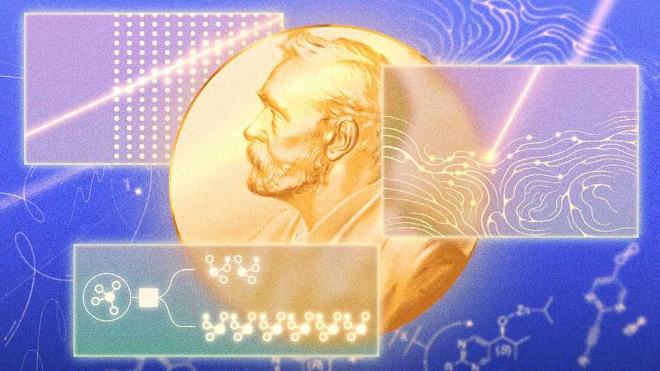
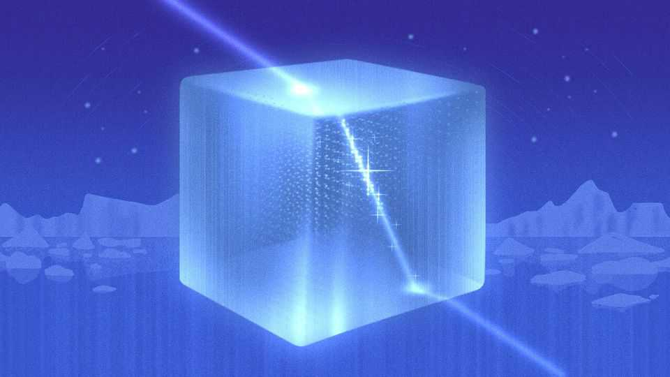

This year’s Nobel science prizes are real-life sci-fi
Laureates pioneered neutrino astronomy, optogenetics and the study of mirror molecules

Oct 8th 2026
When Francis Halzen of the University of Wisconsin-Madison accepts his Nobel prize for physics later this year, he will enjoy the rare privilege of an undivided spotlight. Most physics laureates must share the stage with a collaborator or rival. Dr Halzen will be the first since 1992 to claim all the glory for himself.
The prize citation, unveiled on Tuesday, credits his “decisive contributions to the IceCube Neutrino Observatory”, a particle detector spanning a cubic kilometre of ice near the South Pole which draws on the efforts of 450 researchers in 14 countries. But, according to Ulf Danielsson, a physicist at Uppsala University and secretary to the Nobel committee for physics, “Without his scientific vision, it would have been impossible.”
Detecting neutrinos requires scientific vision in spades. Being electrically neutral (hence the “neutr-”) and physically diminutive (hence the “-ino”), they are, in effect, immune to both the electromagnetic force and gravity, allowing them to pass through most particle detectors unobserved. Their dealings with regular matter are largely limited to interactions via the aptly named weak nuclear force.
Ghostly though they are, neutrinos are also abundant throughout the universe. They are a by-product of fission as well as fusion reactions, making the Sun a powerful nearby source: around 65bn solar neutrinos pass through an area the size of a human fingernail each second. The solar reactions that produce neutrinos also give off other particles, including protons. Sometimes, however, protons arrive at Earth with energies many millions of times greater than those from the Sun. This suggests they come from even more powerful sources much farther away.
What these natural particle accelerators actually are, and how they produce such energetic particles, is largely unknown. Protons are charged and are thus deflected by magnetic fields on their journey to Earth, making their point of origin hard to reconstruct. The same processes that accelerate these protons, however, should produce high-energy neutrinos, too. In the 1980s Dr Halzen was among those who realised that neutrinos’ reluctance to interact with matter allowed them to travel unimpeded for vast distances and act as ideal messengers from otherwise invisible objects.
Still, there was the problem of how to detect them. Previous neutrino detectors had relied on building large vats of perchloroethylene, a dry-cleaning fluid, and waiting for rare interactions between neutrinos and the atoms in the fluid. Although a similar approach could be applied to the hunt for rarer extrasolar neutrinos, a significantly bigger detector than had been built before would be needed to have a chance of catching one.
Thus did the idea for IceCube crystallise. Construction began in 2004 and was completed in 2011. Within two years it picked up 28 high-energy cosmic neutrinos, opening a new window onto the cosmos. Asked on Tuesday what this window might reveal, Dr Halzen, reached by phone, responded: “The real excitement is that I cannot answer that question yet.”
The winners of the prize for physiology or medicine could be permitted more bullishness in outlining the potential benefits of their research. Karl Deisseroth of Stanford University, Peter Hegemann of the Humboldt University of Berlin and Georg Nagel of the University of Würzburg were recognised for laying the foundations of optogenetics. This permits neuroscientists to use light to instantaneously activate individual brain cells, making it possible to work out exactly what particular cells are doing. That enables researchers to investigate both basic neurobiology and the neural basis of illness.
The story begins in the 1990s with Dr Hegemann. At the time he was studying how a genus of single-cell algae known as Chlamydomonas responds to light. He found that their reactions were faster than the equivalent response in a human eye. In a human retina, one protein molecule detects light and then indirectly triggers another, known as an ion channel, to create an electrical signal. Dr Hegemann hypothesised that in his algae that convoluted process was being compressed.
Testing his guess with the tools then available proved hard, until the blossoming science of genomics came to his rescue. A team of Japanese researchers had produced a map of the DNA of Chlamydomonas, showing that it included two genes resembling those for light-sensitive proteins in some other organisms. This insight was confirmed when Dr Hegemann enlisted Dr Nagel’s assistance. Dr Nagel inserted the DNA of the two newly identified genes into some frogs’ eggs, which then turned out the desired proteins in quantities large enough to test. Just as Dr Hegemann had predicted, they turned out to be light-stimulated ion channels.
Realising what they had, Drs Nagel and Hegemann then tried inserting one of the genes, for a protein now known as channelrhodopsin-2, into kidney cells harvested from hamsters and from human embryos. That worked, too. They had, in other words, discovered a way of making mammal cells light-sensitive. It was Dr Deisseroth, however, who conceived of putting channelrhodopsin-2 into cells whose raison d’être is the transmission of electrical signals: neurons. When the idea was tested, cultured rat neurons not only responded when exposed to light, but could also pass signals on to their neighbours.

The paper announcing this finding was published in 2005, but other researchers were also exploring similar ideas. Three years earlier Gero Miesenböck, then at the Memorial Sloan-Kettering Cancer Centre in New York, had done similar work using a light-sensitive protein from a fruit fly. Dr Miesenböck, as some have observed, might have serious reason to be miffed. Edward Boyden, a neuroscientist at the Massachusetts Institute of Technology who collaborated with Dr Deisseroth when he was a PhD student at Stanford, was another surprising omission.
Regardless of details of priority, though, the subject has since exploded. Dr Deisseroth’s lab led the way, first by repeating what had been done in cultured rat cells in living mouse brains, and then by inventing the trick of using extremely thin optical fibres to illuminate, and thus stimulate, groups of neurons. In combination, these tricks let the researchers control the movements of a mouse’s whiskers.
Optogenetics has now been the subject of thousands of papers. It is being used in animals to investigate depression, schizophrenia, blindness, deafness, dementia, addiction and anxiety. There is even an attempt to use it to restore vision in people with a form of blindness called retinitis pigmentosa. Great oaks from little acorns grow. Or, in this case, little algae.
The prize for chemistry, as is often the way, also took its cue from the study of life. Many molecules essential to biology are chiral, capable of existing in two mirror-image forms that should, at least theoretically, exist in the universe in equal quantities. And yet nature is ruthlessly selective. When it comes to living organisms, amino acids are generally left-handed; sugars are right-handed. It is for progress towards understanding how such asymmetry might have come about that Henri Kagan, of the University of Paris-Saclay, and Kenso Soai, of the Tokyo University of Science, received calls from Stockholm.
Chemists had been able to selectively produce molecules with a given chirality before. All such reactions, however, depended on a chiral catalyst, often made up of an unequal mix of left- and right-handed molecules. The assumption was that the ratio of left- to right-handed molecules in the reaction’s products would match the ratio in the catalyst itself. This posed a problem: if the reaction could match only the asymmetry of the catalyst, how, then, could large-scale asymmetry emerge?
In 1986 Dr Kagan refuted this assumption by finding that chiral catalysts could outperform this benchmark. Starting with a catalyst in which left-handed molecules were three times as abundant as right-handed ones, he could engineer reactions that produced a solution with a six-fold imbalance. A meaningful improvement, but still too small to transform the near-total symmetry of inanimate matter into the near-total chirality displayed by life.
It was Dr Soai who bridged the gap. In work published in 2003, he demonstrated that solutions with a minuscule imbalance of chiral molecules could be engineered so as to produce catalysts with increasing chirality. This self-amplification could produce rapid change. Repeating a reaction only three times, for example, allowed Dr Soai to achieve a 630,000-fold increase in the asymmetry of the solution.
The Soai reaction, as it has come be be known, is not the way that life’s chirality emerged. For one thing, the reagents that Dr Soai used could not have existed 4bn years ago. But, as a member of the prize committee explained, it was nonetheless the first time that anyone had created chirality from a non-chiral combination of molecules since the dawn of life those billions of years before. ■